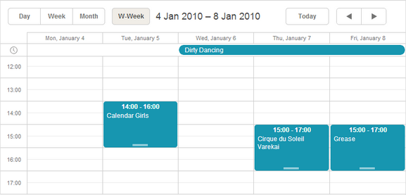

If the available views don't meet your needs, you can create your custom view.
Creating a custom view starts from adding a new tab to the scheduler - the tab of your future view. Mostly it looks like in:
<div class="dhx_cal_tab" name="workweek_tab" style="right:280px;"></div>
Remember:
The label for the view is set as in:
scheduler.locale.labels.{viewName}_tab = "someName"
There are 3 mandatory methods that define common behavior of a view - the view interval (e.g. a week for the Week view, a month for the Month view etc.) and the active date in the view, when the user clicks on the 'Next', 'Prev' navigation buttons in the view header.
The last thing you need is to provide the templates for the header date and X-Axis scale:
scheduler.templates.workweek_date = scheduler.templates.week_date;
scheduler.templates.workweek_scale_date = scheduler.templates.week_scale_date;
Let's consider creating a custom view named 'workweek' that is similar to the Week view, but displays only working days of the week.

Our steps are:
<div id="scheduler_here" class="dhx_cal_container" ...>
<div class="dhx_cal_navline">
...
<div class="dhx_cal_tab" name="workweek_tab" style="right:280px;"></div>
</div>
</div>
scheduler.locale.labels.workweek_tab = "Work week"
scheduler.date.workweek_start = function(date) {
return scheduler.date.week_start(date);//
}
scheduler.date.get_workweek_end=function(start_date){
return scheduler.date.add(start_date,5,"day");
}
scheduler.date.add_workweek=function(date,inc){
return scheduler.date.add(date,inc*7,"day");
}
scheduler.templates.workweek_date = scheduler.templates.week_date;
scheduler.templates.workweek_scale_date = scheduler.templates.week_scale_date;
A view that will be shown in the scheduler initially is specified in the init method, i.e during the scheduler initialization.
But the templates, used by a custom view, can be not fully processed at this moment. Therefore, the initialization will fail.
To prevent such a situation and be sure that the templates of your custom view are fully ready, before the scheduler is initialized,
create custom views in a handler function of the onTemplatesReady event. This event fires only when all the templates are fully processed:
scheduler.attachEvent("onTemplatesReady",function(){
//here you can place your code that creates a custom view
});
scheduler.init(container, date, "custom view name");